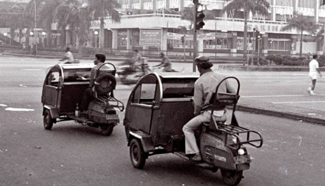
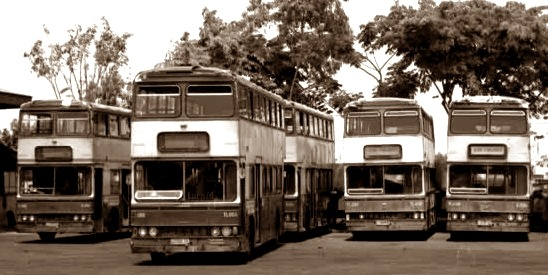
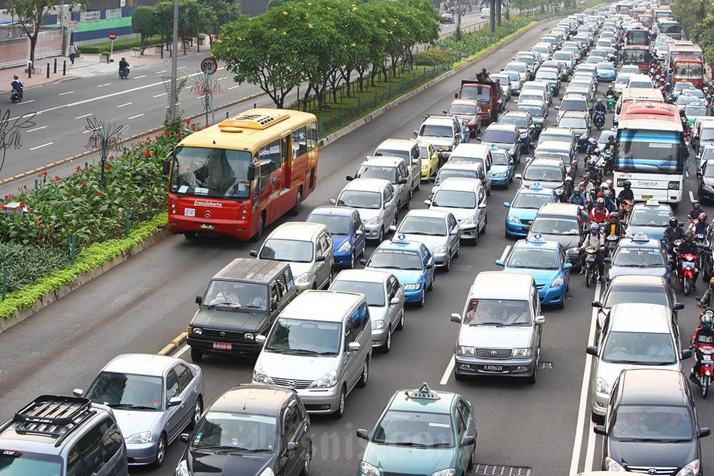

Timeline - Perkembangan transportasi di Indonesia
Pasca-kemerdekaan
Pemerintah mulai membangun infrastruktur dasar seperti jalan raya, jalur kereta api, dan pelabuhan, namun perkembangannya lambat dan belum merata.


Dekade 1960-an hingga 1970-an
Munculnya transportasi seperti bemo dan bajaj sebagai alternatif dari becak yang dihapuskan.
Dekade 1980-an
Munculnya bus tingkat yang sempat beroperasi, namun terhambat oleh kendala suku cadang.


Dekade 2000-an
Integrasi transportasi perkotaan dimulai, terutama di Jakarta dengan program seperti Transjakarta.
Dekade 2010-an hingga sekarang
Integrasi transportasi di Jabodetabek semakin baik dengan adanya KRL, Transjakarta, MRT, LRT, dan kereta bandara.